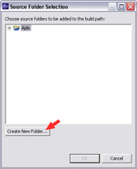

Lenguaje Java y Entorno de Desarrollo
Antes de concretar conceptos acerca del lenguaje Java, veremos algunas nociones y conceptos sobre programación orientada a objetos en general, y sobre diseño de programas mediante dicho paradigma.
Introducción a Java
Java es un lenguaje de programación creado por Sun Microsystems para poder funcionar en distintos tipos de procesadores. Su sintaxis es muy parecida a la de C o C++, e incorpora como propias algunas características que en otros lenguajes son extensiones: gestión de hilos, ejecución remota, etc.
El código Java, una vez compilado, puede llevarse sin modificación alguna sobre cualquier máquina, y ejecutarlo. Esto se debe a que el código se ejecuta sobre una máquina hipotética o virtual, la Java Virtual Machine, que se encarga de interpretar el código (ficheros compilados .class) y convertirlo a código particular de la CPU que se esté utilizando (siempre que se soporte dicha máquina virtual).
Cuando se programa con Java, se dispone de antemano de un conjunto de clases ya implementadas. Estas clases (aparte de las que pueda hacer el usuario) forman parte del propio lenguaje (lo que se conoce como API (Application Programming Interface) de Java).
Variables de entorno en Java
Para su correcto funcionamiento, Java necesita tener establecidas algunas variables de entorno: las variables PATH y CLASSPATH.
La variable de entorno del sistema PATH deberá contener la ruta donde se encuentren los programas para compilar y ejecutar (comandos javac y java de la distribución JDK de Sun, respectivamente). Por ejemplo:
set PATH=%PATH%;C:\jdk1.4\bin (Windows) export PATH=$PATH:/jdk1.4/bin (Linux)
Con la variable CLASSPATH indicamos dónde están las clases externas a las de la API que necesitemos para compilar o ejecutar nuestro programa. Cualquier clase necesaria que no pertenezca a la API debe estar incluída en el CLASSPATH para poder compilar o ejecutar (aunque se encuentre en el mismo directorio que la que compilamos).
Podemos incluir todas las clases que hay en un directorio (sin contar los subdirectorios) poniendo la ruta (absoluta o relativa al directorio actual) del directorio. Por ejemplo, si están en \misclases :
set CLASSPATH=%CLASSPATH%;C:\misclases (Windows) export CLASSPATH=$CLASSPATH:/misclases (Linux)
Si las clases pertenecen a un paquete concreto, se debe apuntar al directorio a partir del cual comienzan los directorios del paquete. Por ejemplo, si la clase MiClase está en el paquete unpaquete, dentro de \misclases (\misclases\unpaquete\MiClase.java):
set CLASSPATH=%CLASSPATH%;C:\misclases (Windows) export CLASSPATH=$CLASSPATH:/misclases (Linux)
Si las clases están empaquetadas en un fichero JAR (veremos a continuación qué es un fichero JAR), se tendrá que hacer referencia a dicho fichero. Por ejemplo:
set CLASSPATH=%CLASSPATH%;C:\misclases\misclases.jar (Windows) export CLASSPATH=$CLASSPATH:/misclases/misclases.jar (Linux)
También podemos incluir en el CLASSPATH el directorio actual:
set CLASSPATH=%CLASSPATH%;. (Windows) export CLASSPATH=$CLASSPATH:. (Linux)
Las expresiones %VARIABLE% (en Windows) o $VARIABLE en (Linux) se utilizan para no sobreescribir el contenido anterior de la variable, sino añadirle lo que se ponga además de dicha expresión. Los distintos ficheros/directorios asignados a cada variable se separan con ';' (en Windows) o con ':' (en Linux).
La forma de establecer las variables cambia en función de la versión del sistema operativo. También podremos hacer estas variables permanentes modificando los ficheros de configuración oportunos (autoexec.bat, .profile, etc), o mediante el panel de control en algunas versiones de Windows.
Compilar y ejecutar clases
Si queremos compilar una clase, se compila con el comando javac (deberemos asegurarnos de que dicho comando está accesible en el PATH), seguido del nombre de fichero a compilar:
javac NombreFichero.java
Tras haber compilado el ejemplo se tendrá un fichero NombreFichero.class, y se habrán compilado y actualizado (si no lo estaban ya) todas las clases que necesitara la clase compilada.
Una vez compilada la clase, para ejecutarla utilizamos el comando java seguido del nombre de la clase (sin extensión):
java NombreClase
Si se quisieran pasar parámetros al programa, se pasan después de la clase:
java NombreClase 20 56 Hola
También podemos ejecutar un fichero JAR, si contiene una clase principal. Para ello pondremos:
java -jar Fichero.jar
A la hora de compilar y ejecutar, es importante respetar las mayúsculas y minúsculas de los nombres de ficheros y clases, y asegurarnos antes de compilar o ejecutar que el CLASSPATH está correctamente establecido para encontrar todas las clases necesarias.
Otros programas de JDK
Además de los comandos javac y java comentados anteriormente, existen otras aplicaciones útiles distribuidas con JDK:
Java Web Start
Java Web Start es una herramienta que permite ejecutar aplicaciones Java desde Internet, sin más que pinchar en el enlace de la aplicación, Java Web Start la descarga a nuestra máquina, con todos los componentes necesarios, y nos permite ejecutarla como una aplicación Java local.
javadoc
javadoc es una herramienta que permite generar las páginas HTML de documentación de los ficheros .java que le indiquemos
appletviewer
appletviewer, como veremos más adelante, permite ejecutar applets sin necesidad de disponer de un navegador Web, pasándole como parámetro la página HTML a ejecutar
rmiregistry
rmiregistry lanza el registro de RMI, para poder comunicar con objetos en remoto.
rmid
rmid es un demonio que se encarga de la accesibilidad y disponibilidad de los objetos en RMI.
Ficheros JAR
Java dispone de una utilidad que permite empaquetar varias clases en un solo fichero comprimido, de forma que hacemos al conjunto más portable, y se puede acceder a las clases de la misma forma que si estuvieran sueltas en el disco. Estos ficheros comprimidos tienen una extensión .jar, y su comportamiento es similar al de un fichero ZIP o un fichero TAR.
Los ficheros JAR tienen varias ventajas:
- Seguridad: Los ficheros JAR pueden estar firmados digitalmente, de forma que cuando el usuario confíe en la firma podrá otorgar permisos a la aplicación.
- Descarga: Al estar contenidas todas las clases en un único fichero el tiempo de descarga disminuye, ya que no necesita establecer una conexión por cada fichero por separado. Además es posible comprimir el contenido del fichero JAR siendo esto totalmente transparente a la hora de usar las clases contenidas en él.
- Versiones: Los ficheros JAR permiten incluir información sobre la versión. Además podemos sellar los paquetes contenidos en el fichero JAR, de forma que todo el contenido del paquete deberá estar dentro del fichero JAR, asegurando así la consistencia en las versiones.
- Portabilidad: Al ser el mecanismo de los ficheros JAR un estándar de la plataforma Java estos ficheros serán portables a cualquier sistema que cuente con Java.
Los ficheros JAR utilizan el formato ZIP, por lo que podremos abrirlos con cualquier aplicación que trabaje con ficheros ZIP. De todas formas Java incorpora una herramienta para trabajar con estos ficheros JAR, llamada jar. Con ella podremos empaquetar o extraer el contenido de un fichero JAR, y realizar otras operaciones propias de este formato. Para empaquetar una serie de ficheros de entrada en un JAR haremos lo siguiente:
jar cvf fichero_jar ficheros_de_entrada
Los parámetros utilizados significan los siguiente:
| c | Indica que la acción a realizar es comprimir (empaquetar) una serie de ficheros en un JAR. |
| v | Verbose. Provoca que muestre por pantalla las operaciones que vaya realizando. |
| f | Indica que la salida debe ir a un fichero en lugar de a la salida estándar. Este fichero es el que especificamos como parámetro fichero_jar. |
Ahora podemos visualizar el contenido de nuestro fichero JAR cambiando el parámetro de la acción a realizar por t.
jar tf fichero_jar
| t | Indica que la acción a realizar es comprobar (test) el contenido del JAR, mostrando todos los ficheros que contiene. |
Si hacemos esto veremos que además de los ficheros especificados dentro del JAR de ha incluido el fichero META-INF/MANIFEST.MF. Este fichero de manifiesto está incluido en todos los JAR, y contiene información sobre su contenido.
Podemos ahora extraer todo el contenido del JAR cambiando el comando de acción por x.
jar xvf fichero_jar
| x | Indica que la acción a realizar es extraer el contenido del JAR. |
Con esto se extraerán todos los ficheros, incluido el manifiesto, pudiendo así editar dicho fichero con cualquier editor ASCII. En este caso veremos el manifiesto por defecto que se incluye en los ficheros JAR. Podemos añadir líneas al manifiesto , para ello deberemos crear un fichero con la información que queramos añadir, e incluirlo al crear el JAR para que a la líneas por defecto, añada los datos que nosotros hayamos incluido. Esto lo haremos con:
jar cmf fichero_manifiesto fichero_jar ficheros_de_entrada
Para trabajar con manifiestos tenemos los siguientes parámetros:
| M | Indica que no se debe incluir el manifiesto por defecto. | ||||||||||||||||||
| m | Indica que se deben añadir las líneas del fichero manifiesto que especifique el usuario. | ||||||||||||||||||
Una vez tengamos nuestras clases empaquetadas en un fichero JAR, para utilizarlas bastará con tener incluido el fichero JAR en el CLASSPATH. De esta forma las clases serás accesibles de la misma forma que si estuviesen directamente en el CLASSPATH sin empaquetar. Para añadir un fichero JAR al CLASSPATH tendremos que incluir el fichero JAR con su ruta absoluta en esta variable de entorno:
SET CLASSPATH=%CLASSPATH%;c:\ruta\fichero.jar
También podemos indicar el CLASSPATH del fichero JAR directamente en la línea de comandos al ejecutar nuestra aplicación ClasePrincipal:
java -cp c:\ruta\fichero.jar ClasePrincipal
En el caso de que empaquetemos una aplicación, podremos definir una clase principal de forma que el fichero JAR sea autoejecutable simplemente escribiendo:
java -jar fichero_jar
Además, en Windows al hacer doble click sobre este fichero JAR también se ejecutará, ya que este tipo de ficheros estarán asociados con el intérprete Java. Para hacer este JAR ejecutable deberemos definir cuál es la clase principal que se va a ejecutar, cosa que haremos en el fichero manifiesto. Para ello deberemos incluir un fichero manifiesto que añada la línea:
Main-Class: MiClasePrincipal
En el caso de los Applets, para cargar un Applet desde un JAR deberemos especificar el fichero JAR en el atributo ARCHIVE del tag APPLET, como se muestra a continuación:
<applet code=MiApplet.class archive="AppletJAR.jar"> </applet>
Extensiones de Java
A partir de JDK 1.2 se incorpora un mecanismo de extensiones que permite añadir nuevas funcionalidades al núcleo de la plataforma Java. Existen extensiones desarrolladas por Sun, como Java 3D y Javamail, pero además cualquier usuario puede desarrollar sus propias extensiones.
El mecanismo de extensiones proporciona escalabilidad a Java, permitiendo hacer que nuestra propia API esté disponible para cualquier aplicación.
Las extensiones son grupos de paquetes y clases que añaden funcionalidades a la plataforma Java, y que serán incluidas mediante el mecanismo de extensiones de Java. Este mecanismo permite que las extensiones definidas sean accesibles por cualquier aplicación sin necesidad de establecer el CLASSPATH, como si se tratase de las clases del núcleo de Java. De hecho, estas extensiones lo que hacen es extender la API del núcleo.
Gracias a este mecanismo podremos obtener e instalar extensiones que amplíen la API del núcleo de la plataforma Java, bien sean extensiones desarrolladas por Sun o por terceros, o bien crear nuestras propias extensiones. Esto nos permitirá ampliar la API según nuestras necesidades, y además facilitará la distribución de nuestras propias librerías de clases, que cualquier usuario podrá instalar y utilizar fácilmente sin preocuparse del lugar donde ubicar las clases y de establecer las variables de entorno necesarias.
Para la creación de nuestras propias extensiones necesitaremos empaquetar todas las clases de nuestra extensión en un fichero JAR.
Lo primero que deberemos hacer cuando queramos crear un extensión es seleccionar todos los paquetes y clases que formarán parte de la API de nuestra extensión y empaquetarlos en un único fichero JAR.
Una vez tengamos el fichero JAR, deberemos añadirlo como extensión. Para ello deberemos copiar el JAR dentro del directorio del JRE (Java Runtime Environment), en el subdirectorio lib/ext. JDK incluye JRE como un subdirectorio suyo, por lo que en este caso la ruta completa donde habrá que incluir los JAR será:
{java.home}/jre/lib/ext/
Con esto la extensión se habrá incluido en la plataforma Java instalada en nuestra máquina, permitiendo que cualquier programa Java que se ejecute en ella pueda utilizarla directamente. Es lo que se conoce como extensión instalada.
Existe otro tipo de extensiones, que no veremos, que se llaman descargadas. Estas no se copian al directorio anteriormente citado, sino que se descargan de internet (útiles por ejemplo a la hora de trabajar con applets alojados en un servidor remoto).
En la página de Sun podemos encontrar una larga lista de extensiones de Java desarrolladas por ellos, que podremos descargar e instalar ampliando de esta manera la API de Java. Las principales extensiones disponibles son:
- Java Communications: Esta API puede ser utilizada para hacer aplicaciones de comunicaciones (voz, fax, etc) independientes de la plataforma. Nos permitirá el acceso a los puertos serie y paralelo.
- Javamail: Proporciona una serie de clases que permitirán construir nuestro propio sistema de correo y mensajería utilizando tecnología Java. Incorpora un proveedor de servicio POP3.
- Java 3D: Nos permitirá incluir de forma sencilla e independiente de la plataforma gráficos 3D en nuestras aplicaciones. Incorpora una sencilla interfaz de alto nivel que nos permitirá definir mundos 3D y controlar el render y la conducta de los objetos 3D.
- Java Media Framework: Permite incorporar a nuestras aplicaciones y Applets elementos multimedia, como puede ser audio y video. Con esta API podremos reproducir, capturar y trabajar con flujos (streaming) de varios tipos de medios.
- Java Advanced Imaging: Esta API proporciona funcionalidades para el procesamiento de imágenes con un alto rendimiento, de forma independiente a la plataforma. Proporciona una interfaz orientada a objetos que permite manipular imágenes de forma sencilla.
- JavaBeans Activation Framework: Permite averiguar el tipo de unos datos determinados (por ejemplo una imagen), encapsular el acceso a estos datos y averiguar las operaciones que podemos hacer con ellos, pudiendo instanciar el bean correspondiente para realizar estas operaciones.
- Infobus: Permite la comunicación entre JavaBeans, definiendo una serie de interfaces entre los beans que colaboran y un protocolo de comunicaciones para estas interfaces.
- Java Cryptography Extension: Consiste en una serie de paquetes que proporcionan funcionalidades de encriptación y generación de claves.
- JavaHelp: Permite a los desarrolladores incorporar ayuda en línea a los programas que realicen, de forma independiente de la plataforma.
Búsqueda de clases en Java
Con lo visto hasta ahora, cuando intentemos compilar o ejecutar un programa, Java buscará las clases necesarias en el siguiente orden:
- Clases principales de Java (que pertenezcan a la API, y que se encuentran en los ficheros rt.jar, i18n.jar).
- Extensiones instaladas
- Classpath
Entorno de desarrollo Eclipse
Eclipse es una herramienta que permite integrar diferentes tipos de aplicaciones. La aplicación principal es el JDT (Java Development Tooling), un IDE para crear programas en Java. Otras aplicaciones, que no vienen con la distribución estándar de Eclipse, se añaden al mismo en forma de plugins, y son reconocidos automáticamente por la plataforma.
Además, Eclipse tiene su propio mecanismo de gestión de recursos. Los recursos son ficheros en el disco duro, que se encuentran alojados en un espacio de trabajo (workspace), un directorio especial en el sistema. Así, si una aplicación de Eclipse modifica un recurso, dicho cambio es notificado al resto de aplicaciones de Eclipse, para que lo tengan en cuenta.
Instalación y ejecución
Para instalar Eclipse se requiere:
- Sistema operativo Windows, Linux, Solaris, QNX o Mac OS/X, con 256 MB de RAM preferiblemente.
- JDK o JRE versión 1.3 o posterior. Se recomienda al menos la versión 1.4.1.
- Los archivos de eclipse para instalar (en un archivo ZIP, o como vengan distribuidos)
Para la instalación, se siguen los pasos:
- Instalar JRE o JDK
- Descomprimir los archivos de Eclipse al lugar deseado del disco duro (p. ej, a C:\eclipse). El directorio en que se instale lo identificaremos de ahora en adelante como ECLIPSE_HOME. En Windows Eclipse detecta automáticamente un JRE o JDK instalado, aunque también se lo podemos proporcionar copiando el directorio jre en ECLIPSE_HOME. Otra opción es proporcionar, al ejecutar Eclipse, la ruta hacia JRE o JDK, mediante una opción -vm:
eclipse -vm ruta_jdk_jre
Para arrancar Eclipse se tiene el ejecutable eclipse.exe o eclipse.sh en ECLIPSE_HOME. La pantalla inicial de Eclipse aparecerá tras unos segundos:
Veremos las opciones principales con detalle más adelante. De los menús, entre otros, pueden resultar interesantes:
-
File:
- New: para crear nuevos proyectos, paquetes, clases Java, etc.
- Import / Export: para importar o exportar recursos con un determinado formato (por ejemplo, exportar un proyecto como un fichero JAR).
-
Project:
- Open / Close Project: para abrir o cerrar el proyecto actual
- Rebuild Project: recompila el proyecto actual
- Rebuild All: recompila todos los proyectos
- Generate Javadoc: genera el javadoc para las clases del proyecto
-
Run:
- Run As: permite indicar cómo queremos ejecutar un proyecto (por ejemplo, como una aplicación Java normal, como un applet, como un test de JUnit, etc).
- Run: ejecuta el proyecto de la forma que hayamos indicado en Run As. Permite seleccionar la clase principal a ejecutar, los parámetros del main(...), etc
-
Window:
- Open Perspective: para abrir una determinada perspectiva (por ejemplo, la perspectiva Java, que será la que nos interese normalmente).
- Show View: permite añadir/quitar vistas a la perspectiva actual. Lo veremos también más adelante.
- Preferences: opciones de configuración general. Algunas de ellas se explicarán con detalle más adelante.
Configuración visual
Perspectivas, vistas y editores
El usuario trabaja con Eclipse mediante el entorno gráfico que se le presenta. Según la perspectiva que elija, se establecerá la apariencia de dicho entorno. Entendemos por perspectiva una colección de vistas y editores, con sus correspondientes acciones especiales en menús y barras de herramientas. Algunas vistas muestran información especial sobre los recursos, y dependiendo de las mismas, en ocasiones sólo se mostrarán algunas partes o relaciones internas de dichos recursos. Un editor trabaja directamente sobre un recurso, y sólo cuando grabe los cambios sobre el recurso se notificará al resto de aplicaciones de Eclipse sobre estos cambios. Las vistas especiales se pueden conectar a editores (no a recursos), por ejemplo, la vista de estructura (outline view) se puede conectar al editor Java. De este modo, una de las características importantes de Eclipse es la flexibilidad para combinar vistas y editores.
Si queremos abrir una determinada perspectiva, vamos a Window -> Open Perspective. Eligiendo luego Other podemos elegir entre todas las perspectivas disponibles:
Para añadir vistas a una perspectiva, primero abrimos la perspectiva, y luego vamos a Window -> Show View y elegimos la que queramos cargar:
Apariencia
Arrastrando la barra de título de una vista o editor, podemos moverlo a otro lugar de la ventana (lo podremos colocar en las zonas donde el cursor del ratón cambie a una flecha negra), o tabularlo con otras vistas o editores (arrastrando hasta el título de dicha vista o editor, el cursor cambia de aspecto, y se ve como una lista de carpetas, soltando ahí la vista o editor que arrastramos, se tabula con la(s) que hay donde hemos soltado).
Configuración general
Desde el menú Window - Preferences podemos establecer opciones de configuración de los distintos aspectos de Eclipse:
Establecer directorios para ficheros fuente o ficheros objeto
Podemos elegir entre tener nuestro código fuente en el mismo lugar que nuestras clases objeto compiladas, o bien elegir directorios diferentes para fuentes y objetos. Para ello tenemos, dentro del menú de configuración anterior, la opción Java - New Project. En el cuadro Source and output folder podremos indicar si queremos colocarlo todo junto (marcando Project) o indicar un directorio para cada cosa (marcando Folders, y eligiendo el subdirectorio adecuado para cada uno):
Establecer la versión de JDK o JRE
Para cambiar el compilador a una versión concreta de Java, elegimos la opción de Java y luego Compiler. Pulsamos en la pestaña Compliance and Classfiles y elegimos la opción 1.4 (o la que sea) de la lista Compiler compliance level:

También podemos utilizar JDK en lugar de JRE para ejecutar los programas. Para ello vamos a Java - Installed JREs, elegimos la línea Standard VM y pulsamos en Edit o en Add, según si queremos modificar el que haya establecido, o añadir nuevas opciones.
Se nos abre un cuadro de diálogo para editar valores. Pulsando en Browse elegimos el directorio de JDK (por ejemplo, C:\j2sdk1.4.0).
Especificar variables de entorno (CLASSPATH)
Podemos añadir variables de entorno en Eclipse, cada una conteniendo un directorio, fichero JAR o fichero ZIP. Para añadir variables vamos a la opción Java - Classpath Variables.
Pulsamos el botón de New para añadir una nueva, y le damos un nombre, y elegimos el fichero JAR o ZIP (pulsando en File) o el directorio (pulsando en Folder).
Primeros pasos con Eclipse
Espacio de trabajo
Por defecto el espacio de trabajo (workspace) para Eclipse es el directorio ECLIPSE_HOME/workspace. Podemos elegir un directorio arbitrario lanzando eclipse con una opción -data que indique cuál es ese directorio, por ejemplo:
eclipse -data C:\misTrabajos
Si no indicamos el espacio de trabajo mediante esta opción, Eclipse nos preguntará qué espacio de trabajo queremos utilizar en la siguiente ventana:
También podemos crear nuestros proyectos y trabajos fuera del workspace si queremos, podemos tomarlo simplemente como un directorio opcional donde organizar nuestros proyectos.
Nuevo proyecto
Lo primero que debemos hacer para empezar a desarrollar una nueva aplicación es crear un proyecto Java en Eclipse. Para ello seleccionamos la opción del menú File > New > Project ...
Dentro de la ventana de nuevo proyecto, seleccionamos Java Project y pulsamos Next.
En la siguiente pantalla deberemos dar un nombre al proyecto para identificarlo dentro de Eclipse. Por defecto creará el directorio para este proyecto dentro del espacio de trabajo de Eclipse. Si queremos crearlo en otro directorio desmarcaremos la casilla Use default.
Cuando hayamos introducido esta información pulsamos sobre Next.
En la siguiente pantalla configuraremos la estructura de nuestro directorio de desarrollo y las librerías externas utilizadas.
Lo primero que vamos a hacer es configurar el directorio de fuentes, donde se almacenarán estos ficheros. En este ejemplo guardaremos los fuentes en src. Pulsaremos sobre Add folder... para añadir este directorio.
Aparecerá la siguiente ventana. Como todavía no existe el directorio src, deberemos crearlo pulsando sobre Create New Folder...

En la siguiente ventana introduciremos el nombre del directorio a crear (src), y pulsamos sobre OK para que lo cree.
De esta forma volverá a la pantalla anterior donde tendremos ya el directorio src creado. Seleccionamos este directorio y pulsamos sobre OK para añadirlo como directorio de fuentes.
Nos preguntará si queremos eliminar el directorio raíz del proyecto como directorio de fuentes y utilizar sólo src para tal fin, y generar las clases compiladas en el directorio bin. Pulsaremos sobre Yes.
De esta forma veremos en la pantalla de configuración del proyecto el directorio src como único directorio de fuentes de la aplicación, y bin como directorio de salida. Ahora vamos a cambiar a la pestaña Libraries para configurar las librerías externas que vamos a necesitar tener en el classpath para nuestro proyecto.

En esta pestaña añadiremos librerías JAR al classpath pulsando sobre Add External JARs ...
Deberemos seleccionar los ficheros JAR que queremos añadir al classpath. Por ejemplo, si queremos desarrollar Servlets, deberemos incluir la librería de servlets servlet.jar en esta lista.
Una vez tengamos esta librería incluida se mostrará en la lista como se puede ver a continuación. Ahora ya podemos pulsar sobre Finish para que se cree el proyecto con los datos que hemos introducido.
Crear directorios y ficheros
Una vez creado el proyecto, podremos crear directorios y ficheros dentro de nuestro directorio de desarrollo. Por ejemplo, si queremos crear una web para nuestro proyecto, podremos crear un directorio web donde guardaremos los documentos HTML.
Pulsando con el botón derecho sobre nuestro proyecto en el explorador de paquetes se abrirá un menú contextual con el que podremos crear un nuevo directorio. Para ello pulsaremos sobre la opción New > Folder.
Aparecerá la siguiente pantalla donde deberemos introducir el nombre del directorio que vamos a crear. Por ejemplo podemos crear de esta forma el directorio web donde introduciremos todos los ficheros HTML.
Una vez tengamos la estructura de directorios necesaria, podemos crear ficheros genéricos de texto. De esta forma podremos crear por ejemplo cualquier fichero HTML o XML que queramos añadir a la aplicación. Para crear un fichero genérico de texto pulsaremos sobre la opción New > File del menú contextual como se muestra a continuación:
En la siguiente ventana introduciremos el nombre del fichero a crear. Por ejemplo, podemos crear un fichero web.xml, con la configuración de nuestra aplicación web.
Una vez creado el fichero, podremos abrirlo en el editor de texto de Eclipse para escribir su contenido. Introduciremos en este editor el contenido de este XML y grabaremos el fichero pulsando sobre el icono Guardar.
De la misma forma podemos crear cualquier otro fichero de texto para nuestra aplicación, como páginas HTML y JSP.
Crear una nueva clase
Para crear una nueva clase en nuestra aplicación pulsaremos sobre New > Class.
Se mostrará la siguiente pantalla donde introduciremos los datos de la nueva clase a crear. Deberemos introducir el paquete y el nombre de la clase. Si queremos que la clase herede de otra, o implemente una serie de interfaces, deberemos especificarlo en los campos Superclass e Interfaces. Por ejemplo, si estamos desarrollando un Servlet deberemos heredar de la clase HttpServlet. Para seleccionar está superclase podemos pulsar sobre el botón Browse ... junto al campo Superclass.
Se mostrará la siguiente ventana para explorar las clases. Introduciendo en el campo de texto superior una parte del nombre de la clase que buscamos, por ejemplo 'HttpServlet', nos mostrará la lista de todas las clases que coincidan con ese nombre. Seleccionaremos de la lista la clase que buscamos (HttpServlet) y pulsamos OK.
Entonces aparecerá el nombre completo de la clase seleccionada en el campo Superclass de la ventana anterior. Ya podremos pulsar sobre Finish para crear la clase.
Eclipse creará automáticamente el esqueleto de esta clase y podremos modificarlo en el editor. Este editor nos ofrecerá facilidades como autocompletar los nombres de los métodos, y revisar la sintaxis del código conforme lo escribimos.
En el caso de que estemos implementando un Servlet, deberemos sobrescribir el método doGet de esta clase. Para sobrescribir métodos de clases de las que heredamos abriremos el menú contextual sobre el área de edición de código, y seleccionamos la opción Source > Override/Implement Methods ...
Entonces podremos seleccionar el método doGet que es el que nos interesa en este caso y pulsar OK.
Esto nos creará el esqueleto de este método, dentro del cual tendremos que añadir el código necesario. Podemos copiar el código que hemos visto para el servlet de ejemplo anterior.
Nos mostrará subrayados con rojo los errores en el código. Posiblemente haya errores del tipo "PrintWriter cannot be resolved" debidos a no haber importado el paquete necesario donde se encuentra esta clase. Para solucionarlos podemos abrir un menú contextual pulsando con el botón derecho sobre el elemento que da este error, y seleccionar la opción Source > Add Import. De esta forma Eclipse añadirá automáticamente el import para este elemento a nuestra clase, sin tener nosotros que buscar el paquete en el que se encontraba.
Otra opción interesante de este menú contextual del editor de código es la opción Source > Format, que dará formato automáticamente al código añadiendo las sangrías necesarias para cada línea de código, permitiéndonos de esta forma "limpiar" el código de forma rápida.
Plugins en Eclipse
Para instalar nuevos plugins, simplemente hay que copiarlos en el directorio ECLIPSE_HOME/plugins. Después habrá que reiniciar Eclipse para que pueda tomar los nuevos plugins instalados.
Existen gran cantidad de plugins desarrollados. Aquí contaremos algunos que pueden ser de utilidad, como el plugin EclipseUML de Omondo para realizar diseño UML (diagramas de clases, de paquetes, etc) en un determinado proyecto, o el plugin Lomboz para realizar proyectos J2EE.
Componentes de un programa Java
En un programa Java podemos distinguir varios elementos:
Clases
Para definir una clase se utiliza la palabra reservada class, seguida del nombre de la clase:
class MiClase
{
...
}
Campos y variables
Dentro de una clase, o de un método, podemos definir campos o variables, respectivamente, que pueden ser de tipos simples, o clases complejas, bien de la API de Java, bien que hayamos definido nosotros mismos, o bien que hayamos copiado de otro lugar.
int a; Vector v; MiOtraClase mc;
Métodos
Los métodos o funciones se definen de forma similar a como se hacen en C: indicando el tipo de datos que devuelven, el nombre del método, y luego los argumentos entre paréntesis:
void imprimir(String mensaje)
{
... // Código del método
}
Vector insertarVector(Object elemento, int posicion)
{
... // Código del método
}
Constructores
Podemos interpretar los constructores como métodos que se llaman igual que la clase, y que se ejecutan con el operador new para reservar memoria para los objetos que se creen de dicha clase:
MiClase()
{
... // Código del constructor
}
MiClase(int valorA, Vector valorV)
{
... // Código de otro constructor
}
No tenemos que preocuparnos de liberar la memoria del objeto al dejar de utilizarlo. Esto lo hace automáticamente el garbage collector. Aún así, podemos usar el método finalize() para liberar manualmente.
Paquetes
Las clases en Java se organizan (o pueden organizarse) en paquetes, de forma que cada paquete contenga un conjunto de clases. También puede haber subpaquetes especializados dentro de un paquete o subpaquete, formando así una jerarquía de paquetes, que después se plasma en el disco duro en una estructura de directorios y subdirectorios igual a la de paquetes y subpaquetes (cada clase irá en el directorio/subdirectorio correspondiente a su paquete/subpaquete).
Cuando queremos indicar que una clase pertenece a un determinado paquete o subpaquete, se coloca al principio del fichero la palabra reservada package seguida por los paquetes/subpaquetes, separados por '.' :
package paq1.subpaq1;
...
class MiClase {
...
Si queremos desde otra clase utilizar una clase de un paquete o subpaquete determinado (diferente al de la clase en la que estamos), incluimos una sentencia import antes de la clase (y después de la línea package que pueda tener la clase, si la tiene), indicando qué paquete o subpaquete queremos importar:
import paq1.subpaq1.*;
import paq1.subpaq1.MiClase;
La primera opción (*) se utiliza para importar todas las clases del paquete (se utiliza cuando queremos utilizar muchas clases del paquete, para no ir importando una a una). La segunda opción se utiliza para importar una clase en concreto.
Al importar, ya podemos utilizar el nombre de la clase importada directamente en la clase que estamos construyendo. Si no colocásemos el import podríamos utilizar la clase igual, pero al referenciar su nombre tendríamos que ponerlo completo, con paquetes y subpaquetes:
MiClase mc; // Si hemos hecho el 'import' antes
paq1.subpaq1.MiClase mc; // Si NO hemos hecho el 'import' antes
Existe un paquete en la API de Java, llamado java.lang, que no es necesario importar. Todas las clases que contiene dicho paquete son directamente utilizables. Para el resto de paquetes (bien sean de la API o nuestros propios), será necesario importarlos cuando estemos creando una clase fuera de dichos paquetes.
Aunque para una clase simple o un programa de uso interno sencillo no es necesario agrupar las clases en paquetes, sí es recomendable asignar un nombre de paquete a cada clase de una aplicación, para evitar que luego Java no pueda encontrarlas, debido a que no tienen paquete asignado.
Modificadores de acceso
Tanto las clases como los campos y métodos admiten modificadores de acceso, para indicar si dichos elementos tienen ámbito público, protegido o privado. Dichos modificadores se marcan con las palabras reservadas public, protected y private, respectivamente, y se colocan al principio de la declaración:
public class MiClase {
...
protected int b;
...
private int miMetodo(int b) {
...
El modificador protected implica que los elementos que lo llevan son visibles desde la clase, sus subclases, y las demás clases del mismo paquete que la clase.
Si no se especifica ningún modificador, el elemento será considerado de tipo paquete. Este tipo de elementos podrán ser visibles desde la clase o desde clases del mismo paquete.
Cada fichero Java que creemos debe tener una y sólo una clase pública (que será la clase principal del fichero). Dicha clase debe llamarse igual que el fichero. Aparte, el fichero podrá tener otras clases internas, pero ya no podrán ser públicas.
Por ejemplo, si tenemos un fichero MiClase.java, podría tener esta apariencia:
public class MiClase
{
...
}
class OtraClase
{
...
}
class UnaClaseMas
{
...
}
Otros modificadores
Además de los modificadores de acceso vistos antes, en clases, métodos y/o campos se pueden utilizar también estos modificadores:
- abstract: elemento base para la herencia (los objetos subtipo deberán definir este elemento). Se utiliza para definir clases abstractas, y métodos abstractos dentro de dichas clases, para que los implementen las subclases que hereden de ella.
- static: elemento compartido por todos los objetos de la misma clase. Con este modificador, no se crea una copia del elemento en cada objeto que se cree de la clase, sino que todos comparten una sola copia en memoria del elemento, que se crea sin necesidad de crear un objeto de la clase que lo contiene.
- final: objeto final, no modificable ni heredable (se utiliza para definir constantes)
- synchronized: para elementos a los que no se puede acceder al mismo tiempo desde distintos hilos de ejecución.
Estos modificadores se colocan tras los modificadores de acceso:
public abstract class Ejemplo // Clase abstracta para heredar de ella
{
public static final TAM = 10; // Constante estática de valor 10
public abstract void metodo(); // Método abstracto a implementar
public synchronized void otroMetodo()
{
... // Aquí dentro sólo puede haber un hilo a la vez
}
}
NOTA IMPORTANTE: si tenemos un método estático (static), dentro de él sólo podremos utilizar elementos estáticos (campos o métodos estáticos), o bien campos y métodos de objetos que hayamos creado dentro del método. Por ejemplo, si tenemos:
public class UnaClase
{
public int a;
public static int metodo()
{
return a + 1;
}
}
dará error, porque el campo a no es estático, y lo estamos utilizando dentro del método estático. Para solucionarlo tenemos dos posibilidades: definir a como estático (si el diseño del programa lo permite), o bien crear un objeto de tipo UnaClase en el método, y utilizar su campo a (que ya no hará falta que sea estático, porque hemos creado un objeto y ya podemos acceder a su campo a):
public class UnaClase
{
public int a;
public static int metodo()
{
UnaClase uc = new UnaClase();
// ... Aquí haríamos que uc.a tuviese el valor adecuado
return uc.a + 1;
}
}
Ejecución de clases: método main
En las clases principales de una aplicación (las clases que queramos ejecutar) debe haber un método main con la siguiente estructura:
public static void main(String[] args)
{
... // Código del método
}
Dentro pondremos el código que queramos ejecutar desde esa clase. Hay que tener en cuenta que main es estático, con lo que dentro sólo podremos utilizar campos y métodos estáticos, o bien campos y métodos de objetos que creemos dentro del main.
Ejemplo completo
Con todo lo anterior, podríamos tener una clase como:
package paquete1.subpaquete1;
import otropaquete.MiOtraClase;
import java.util.Vector;
public class MiClase
{
public int a;
public Vector v;
private MiOtraClase mc;
public MiClase()
{
... // Código del constructor
}
public MiClase(int valorA, Vector valorV)
{
... // Código de otro constructor
}
void imprimir(String mensaje)
{
... // Código del método
}
public Vector insertarVector(Object elemento, int posicion)
{
... // Código del método
}
}
Y podríamos definir una instancia de esa clase, y utilizar sus campos y métodos. Para ello utilizamos el operador new:
import paquete1.subpaquete1.*;
import java.util.*;
public class OtraClase
{
public void metodo()
{
MiClase mc;
mc = new MiClase (1, new Vector());
mc.a++;
mc.insertarVector("hola", 0);
}
...
}
Herencia
Cuando queremos que una clase herede de otra, se utiliza al declararla la palabra extends tras el nombre de la clase, para decir de qué clase se hereda. Para hacer que Pato herede de Animal:
class Pato extends Animal
Con esto automáticamente Pato tomaría todo lo que tuviese Animal (aparte, Pato puede añadir sus características propias). Si Animal fuese una clase abstracta, Pato debería implementar los métodos abstractos que tuviese.
Punteros this y super
this se usa para hacer referencia a los miembros de la propia clase. Se utiliza cuando hay otros elementos con el mismo nombre, para distinguir :
public class MiClase
{
int i;
public MiClase (int i)
{
this.i = i; // i de la clase = parametro i
}
}
super se usa para llamar al mismo elemento en la clase padre. Si la clase MiClase tiene un método Suma_a_i(...), lo llamaríamos desde esta otra clase con:
public class MiNuevaClase extends MiClase
{
public void Suma_a_i (int j)
{
i = i + (j / 2);
super.Suma_a_i (j);
}
}
Interfaces
Ya hemos visto cómo definir clases normales, y clases abstractas. Si queremos definir un interfaz, se utiliza la palabra reservada interface, en lugar de class, y dentro declaramos (no implementamos), los métodos que queremos que tenga la interfaz:
public interface MiInterfaz
{
public void metodoInterfaz();
public float otroMetodoInterfaz();
}
Después, para que una clase implemente los métodos de esta interfaz, se utiliza la palabra reservada implements tras el nombre de la clase:
public class UnaClase implements MiInterfaz
{
public void metodoInterfaz()
{
... // Código del método
}
public float otroMetodoInterfaz()
{
... // Código del método
}
}
Notar que si en lugar de poner implements ponemos extends, en ese caso UnaClase debería ser un interfaz, que heredaría del interfaz MiInterfaz para definir más métodos, pero no para implementar los que tiene la interfaz. Esto se utilizaría para definir interfaces partiendo de un interfaz base, para añadir más métodos a implementar.
Una clase puede heredar sólo de otra única clase, pero puede implementar cuantos interfaces necesite:
public class UnaClase extends MiClase implements MiInterfaz, MiInterfaz2, MiInterfaz3
{
...
}
Programas Básicos en Java
Veamos ahora algunos ejemplos de programas en Java.
-
Ejemplo: El siguiente ejemplo muestra un texto por pantalla (muestra
"Mi programa Java"):
/** * Ejemplo que muestra un texto por pantalla */ public class Ejemplo1 { public static void main(String[] args) { System.out.println ("Mi programa Java"); } } -
Ejemplo: El siguiente ejemplo toma dos números (un entero
y un real) y devuelve su suma:
/** * Ejemplo que suma dos numeros: un entero y un real */ public class Ejemplo2 { int n1; // Primer numero (el entero) float n2; // Segundo numero (el real) /** * Constructor */ public Ejemplo2(int n1, float n2) { this.n1 = n1; this.n2 = n2; } /** * Suma dos numeros y devuelve el resultado (real) */ public float suma() { return (n1 + n2); } /** * Main */ public static void main(String[] args) { if (args.length < 2) { System.out.println ("Uso: java Ejemplo2 <n1> <n2>"); System.exit(-1); } // Tomamos los dos parametros int n1 = Integer.parseInt(args[0]); float n2 = Float.parseFloat(args[1]); // Creamos un objeto Ejemplo2 y le pedimos la suma de los valores Ejemplo2 e = new Ejemplo2(n1, n2); System.out.println ("Resultado: " + e.suma()); } } -
Ejemplo: El siguiente ejemplo resuelve el
teorema de pitágoras (obtiene una hipotenusa a partir de dos catetos):
/** * Este ejemplo resuelve el teorema de Pitágoras: * hipotenusa = raiz (cateto1 * cateto1 + cateto2 * cateto2) */ public class Ejemplo3 { // Primer Cateto public static final int CATETO1 = 20; // Segundo Cateto public static final int CATETO2 = 50; /** * Obtiene la hipotenusa de dos catetos que se pasan como parametro */ public static double hipotenusa(int cateto1, int cateto2) { return Math.sqrt(Math.pow(cateto1, 2) + Math.pow(cateto2, 2)); } /** * Main */ public static void main(String[] args) { System.out.println ("La hipotenusa de los catetos indicados es:"); double h = hipotenusa(CATETO1, CATETO2); System.out.println ("h = " + h); } } -
Ejemplo: El siguiente ejemplo devuelve todos los números
primos que encuentra hasta un número determinado:
/** * Este ejemplo devuelve los numeros primos encontrados hasta un * cierto valor */ public class Ejemplo4 { /** * Obtiene si un número es primo o no */ public static boolean esPrimo (int valor) { int i = 2; while (i < valor) { if (valor % i == 0) return false; i++; } return true; } /** * Main */ public static void main(String[] args) { System.out.println ("Numeros primos hasta el " + args[0] + ":"); for (int i = 1; i < Integer.parseInt(args[0]); i++) if (esPrimo(i)) System.out.print (" " + i); System.out.println ("\nFinalizado"); } } -
Ejemplo: El siguiente ejemplo muestra cómo utilizar herencia
y clases abstractas. Define una clase abstracta Persona, de la que hereda
la clase Hombre. La clase Anciano a su vez hereda de la clase Hombre. En
la clase Ejemplo5 se tiene el método main(), que muestra resultados
de llamadas a todas las clases. Compilando esta clase se compila todo el
ejemplo:
/** * Ejemplo de herencias y clases abstractas */ public class Ejemplo5 { /** * Main */ public static void main(String[] args) { Hombre h = new Hombre(); Anciano a = new Anciano(); Persona p = (Persona)a; System.out.println ("Edad del hombre: " + h.edad()); System.out.println ("Genero del anciano: " + a.genero()); System.out.println ("Clase de la persona: " + p.clase()); } }/** * Ejemplo de herencias y clases abstractas */ public abstract class Persona { /** * Devuelve la clase a la que pertenecen las personas */ public String clase() { return "mamiferos"; } /** * Devuelve el genero de la persona */ public abstract String genero(); /** * Devuelve la edad de la persona */ public abstract String edad(); }/** * Ejemplo de herencias y clases abstractas */ public class Hombre extends Persona { /* No hace falta definir el metodo clase(), porque ya esta definido en la clase padre. Lo tendríamos que definir si queremos devolver algo distinto a lo que devuelve allí */ /** * Devuelve el genero de la persona (este metodo si hay que * definirlo porque es abstracto en la clase padre) */ public String genero() { return "masculino"; } /** * Devuelve la edad de la persona (este metodo si hay que definirlo * porque es abstracto en la clase padre) */ public String edad() { return "40"; } }/** * Ejemplo de herencias y clases abstractas */ public class Anciano extends Hombre { /* No hace falta definir ningun metodo, sólo aquellos en los que queramos devolver cosas distintas. En este caso, la edad */ /** * Devuelve la edad de la persona */ public String edad() { return "75"; } }